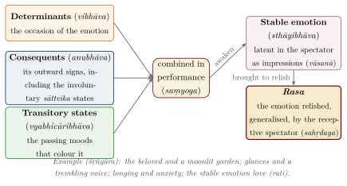

Chapter 6: Rasa: Emotion and Aesthetic Experience¶
na hi rasād ṛte kaścid arthaḥ pravartate
For no meaning proceeds without rasa.
— Nāṭyaśāstra, chapter 6 (prose following verse 31)
6.1 Introduction¶
The most detailed analysis of emotion in classical Indian literature is found not in a philosophical or medical text but in a treatise on theatre. The Nāṭyaśāstra, attributed to the sage Bharata, is a compilation whose main body is usually dated between about 200 BCE and 200 CE (Ghosh 1950). Its sixth and seventh chapters set out a theory of how a performance produces in its audience a distinctive aesthetic experience, called rasa — literally “taste”, “flavour” or “essence” — and in doing so they classify the emotions, their causes, their bodily expressions and their accompanying transient states. Over the following millennium the theory was debated and refined by the theorists of poetry, culminating in the work of the Kashmiri philosopher Abhinavagupta (c. 950–1016), who made it the basis of a philosophy of aesthetic consciousness.
This chapter presents rasa theory as a contribution to the understanding of emotion. Its fuller place in the history of literature and theatre is treated in Volumes 8 and 9 of this series.
6.2 The Rasa-Sūtra¶
The core of the theory is a single sentence in prose:
Nāṭyaśāstra, chapter 6 (prose following v. 31)
vibhāvānubhāvavyabhicārisaṃyogād rasaniṣpattiḥ
Rasa arises from the combination of the determinants, the consequents and the transitory states.
-
The determinants (vibhāva) are the causes of an emotion as represented on stage: the characters and situations that occasion it. Later theorists distinguished the “supporting” determinant (ālambana), such as the beloved in love, from the “stimulating” determinant (uddīpana), such as moonlight or a garden.
-
The consequents (anubhāva) are the outward signs by which the emotion is expressed and recognised: glances, gestures, changes of voice.
-
The transitory states (vyabhicāribhāva, also sañcāribhāva) are passing emotional and physical conditions that accompany and colour the dominant emotion.
When these are combined in a performance, the “stable emotion” (sthāyibhāva) latent in the spectator is brought to the condition of rasa (Figure 6.1). Bharata explains the term by an analogy with food: just as a discerning person, eating food prepared with various spices, tastes its flavours and feels pleasure, so cultured spectators “taste” the stable emotions brought out by the various elements of a performance.

6.3 The Stable Emotions and Their Rasas¶
Bharata lists eight rasas, each grounded in a stable emotion. Each is also assigned a colour and a presiding deity (Nāṭyaśāstra 6.42–45; Table 6.1).
6.3.1 The Debate over Śānta¶
Whether there is a ninth, “tranquil” rasa was one of the great debates of Indian aesthetics. The critical edition of the Nāṭyaśāstra lists eight; some manuscripts contain a passage on śānta which is generally regarded as an interpolation. Udbhaṭa (c. 800) is the first known theorist to count nine, and Ānandavardhana argued that the dominant rasa of the Mahābhārata is śānta. Opponents objected that tranquillity, the cessation of all emotion, cannot be represented on stage or relished. Abhinavagupta defended śānta at length, identifying its stable emotion with the knowledge of truth (tattvajñāna) or the self, and arguing that it is in a sense the ground of all the other rasas (Masson and Patwardhan 1969). After him the “nine rasas” (navarasa) became standard.
6.4 The Classification of Emotional States¶
Besides the eight stable emotions, Bharata lists thirty-three transitory states and eight “involuntary” or “sāttvika” states — forty-nine bhāvas in all. The transitory states are listed in Table 6.2.
| Term | Translation | Term | Translation |
|---|---|---|---|
| nirveda | despondency | garva | pride |
| glāni | weakness | viṣāda | despair |
| śaṅkā | apprehension | autsukya | longing, impatience |
| asūyā | envy | nidrā | sleepiness |
| mada | intoxication | apasmāra | epileptic fit |
| śrama | weariness | supta | dreaming |
| ālasya | indolence | vibodha | awakening |
| dainya | dejection | amarṣa | indignation |
| cintā | anxiety | avahitthā | dissimulation |
| moha | distraction, bewilderment | ugratā | ferocity |
| smṛti | recollection | mati | resolve, understanding |
| dhṛti | contentment | vyādhi | sickness |
| vrīḍā | shame | unmāda | madness |
| capalatā | inconstancy | maraṇa | death |
| harṣa | joy | trāsa | fright |
| āvega | agitation | vitarka | deliberation |
| jaḍatā | stupor |
The eight sāttvika states — freezing, sweating, gooseflesh, a breaking voice, trembling, change of colour, tears and fainting (stambha, sveda, romāñca, svarabheda, vepathu, vaivarṇya, aśru, pralaya) — are psychologically the most interesting of Bharata’s lists (its performance technique is treated in Volume 9, Saṅgīta–Nāṭya). These are the signs that the body gives of strong feeling without the person willing them; a modern psychologist would call them autonomic. Bharata’s name for them reflects his view that they cannot be faked by technique alone: the actor must produce them from an absorbed, concentrated mind (sattva). The theory thus recognises a layer of emotion below voluntary control, and treats access to it as a matter of trained inner attention.
The classification is notable for its range. It includes emotions in the narrow sense (envy, shame, joy, anxiety), cognitive states (recollection, deliberation, resolve), bodily states (weariness, sickness, sleepiness) and extreme conditions (madness, death) — everything, in short, that an actor might have to represent. For each state Bharata gives its determinants and the means of representing it. The Nāṭyaśāstra’s interest is practical: it is a manual for performers, and its analysis of emotion is an analysis of how emotion is caused, expressed and recognised.
6.5 The Actor’s Craft¶
Because the Nāṭyaśāstra is a manual for performers, its analysis of emotion is tied to a detailed account of how emotion is represented. Representation (abhinaya) is of four kinds: bodily (āṅgika), through movements of the head, eyes, eyebrows, hands, feet and body; verbal (vācika), through speech, song, intonation and metre; “ornamental” (āhārya), through costume, make-up and stage properties; and “involuntary” (sāttvika), through the bodily signs of genuine feeling described above. The text catalogues dozens of glances, each suited to a particular emotion, and many single and combined hand gestures (hasta) that became the basis of the gestural vocabulary of Indian classical dance.
The analysis presupposes a view about emotion and its expression: that emotions have characteristic outward signs, which can be learned, reproduced and recognised by others, and that a skilled performer can evoke in an audience an emotion that he does not himself feel in the ordinary way. Later theorists debated whether the actor himself experiences rasa; Abhinavagupta held that he can, as a spectator of his own performance, but that his task is to present the determinants and consequents, not to suffer the emotion. The question is close to the modern debate about whether actors should “live” or “present” the emotions of their roles.
6.6 Situations of Love: The Heroines¶
The Nāṭyaśāstra and later works on drama and poetry, such as Dhanañjaya’s Daśarūpaka (10th century), classify heroines (nāyikā) according to their situation in love. The best-known list has eight: the woman whose lover is devoted to her (svādhīnapatikā), the woman dressed and waiting for her lover (vāsakasajjā), the woman longing in separation (virahotkaṇṭhitā), the woman who finds her lover unfaithful (khaṇḍitā), the woman who has quarrelled with him and repents (kalahāntaritā), the woman disappointed when he fails to come (vipralabdhā), the woman whose lover is abroad (proṣitapriyā), and the woman who goes out to meet him (abhisārikā).
The classification is a typology of emotional situations rather than of personalities: each defines a constellation of circumstances, feelings and expressions that poets, painters and dancers could represent. It was immensely productive in later Indian art, from Sanskrit and Hindi poetry to miniature painting and classical dance. It also reflects the perspective of its male authors and audiences, in which women’s emotions are defined largely by their relation to a man — a limitation that modern feminist critics have noted.
6.7 Four Interpretations¶
The rasa-sūtra is brief, and its interpretation became the central problem of Indian aesthetics. Abhinavagupta’s commentary on the Nāṭyaśāstra, the Abhinavabhāratī, summarises the views of earlier commentators whose own works are lost (Gnoli 1956; Pollock 2016).
-
Bhaṭṭa Lollaṭa held that rasa is the stable emotion of the original character (Rāma, for example) intensified by the determinants and other factors, and present secondarily in the actor who imitates him.
-
Śrī Śaṅkuka held that the spectator infers the emotion from the actor’s representation, much as one infers that a painted horse is a horse; rasa is an imitation of emotion, apprehended by a special kind of inference.
-
Bhaṭṭa Nāyaka (10th century) objected that emotion that belongs to someone else cannot be relished, and argued that poetry and drama have two special powers beyond denotation: a power of “generalisation” (bhāvakatva), by which the determinants and the emotion are made common (sādhāraṇīkṛta) and freed from their connection with particular persons, and a power of “enjoyment” (bhojakatva), by which the spectator relishes the emotion in a state of tranquil self-awareness.
-
Abhinavagupta accepted Bhaṭṭa Nāyaka’s notion of generalisation but rejected his special powers. For Abhinavagupta rasa is suggested (vyaṅgya) in the sense developed by Ānandavardhana: the spectator’s own latent emotional impressions (vāsanā) are awakened by the generalised situation, and rasa is the relishing of one’s own consciousness as coloured by them.
6.8 Abhinavagupta’s Theory of Aesthetic Experience¶
6.8.1 Generalisation¶
Generalisation (sādhāraṇīkaraṇa) is the key to Abhinavagupta’s account. A spectator watching a scene of grief on stage does not grieve as he would at a personal loss; nor does he merely observe another person’s grief. The emotion is detached from the particular “I” and “he”, from particular times and places, and becomes, as it were, grief as such — available to be savoured rather than suffered. This is why even painful emotions can be the material of aesthetic pleasure: the karuṇa rasa of a tragic play is enjoyed, though the grief it is based on would be painful in life.
6.8.2 Obstacles¶
Abhinavagupta lists seven obstacles (vighna) that prevent the arising of rasa, and explains the conventions of theatre as means of removing them. They include the lack of credibility of what is presented; the spectator’s absorption in the particular circumstances of his own or another person’s situation; his being overwhelmed by his own pleasure or pain; the inadequacy of the means of perception; lack of clarity; the subordination of the main emotion; and doubt about which emotion is intended. The music, costume, stylised gesture and stage conventions of theatre, he argues, serve to detach the spectator from ordinary concerns and to focus his attention.
6.8.3 The Receptive Spectator¶
The ideal audience is the sahṛdaya, “one with heart” — a term taken from Ānandavardhana. Abhinavagupta describes such people as those in whom long familiarity with poetry has made the “mirror of the mind” clear, so that they are able to become absorbed in what is described and respond with their own hearts. Aesthetic capacity, on this view, is cultivated, not innate; it depends on education and practice. The theory thus has an educational dimension that is easily overlooked.
6.8.4 Rasa and the Bliss of Brahman¶
Abhinavagupta describes the relishing of rasa as a state of absorbed, self-aware delight (camatkāra), free of practical concerns, and compares it with the bliss of the self. He does not, however, identify the two: aesthetic experience is temporary, dependent on the performance, and coloured by particular emotions, whereas liberation is none of these. The comparison is older than Abhinavagupta: in his own report of Bhaṭṭa Nāyaka’s view, the relishing of rasa is already likened to the tasting of the supreme Brahman (Pollock 2016). The later theorist Viśvanātha (14th century) in his Sāhityadarpaṇa (3.2) gave the comparison its most famous formulation: rasa is “a twin brother of the tasting of Brahman” (brahmāsvādasahodara). That phrase is often attributed to Abhinavagupta; it is Viśvanātha’s, though the idea goes back through Abhinavagupta to Bhaṭṭa Nāyaka.
6.9 The Education of the Poet¶
If the spectator’s sensibility had to be cultivated, so did the poet’s. The theorists agreed that poetry requires three things: innate talent (śakti or pratibhā), learning and worldly experience (vyutpatti, nipuṇatā), and practice under the guidance of those who know poetry (abhyāsa). Mammaṭa’s Kāvyaprakāśa (11th century) states the triad at the beginning of his treatise, and most later writers follow him.
The fullest account of a poet’s education is Rājaśekhara’s Kāvyamīmāṃsā (early 10th century). It describes the sciences a poet should study — grammar, lexicons, metrics, poetics, the epics and Purāṇas, the arts — and the daily routine of a poet’s household, from morning study to evening assemblies; it classifies poets by their talents and stages of development, and pupils by their capacities. Rājaśekhara also remarks that women, too, can be poets, since cultivation belongs to the self and not to sex, and mentions princesses, daughters of ministers and courtesans who were accomplished poets. The work shows that in the courtly culture of the late first millennium the making of a poet was understood as a deliberate education of talent, knowledge and sensibility — a counterpart, on the side of the artist, of the cultivated sahṛdaya described above.
6.10 Suggestion: Dhvani¶
Ānandavardhana (c. 850), in his Dhvanyāloka, argued that the essence of poetry lies in what is suggested rather than stated:
Ānandavardhana, Dhvanyāloka 1.1 (opening)
kāvyasyātmā dhvanir iti budhair yaḥ samāmnātapūrvaḥ
The soul of poetry is suggestion — so the wise have declared before.
Ānandavardhana distinguished the literal meaning (vācya), the secondary or figurative meaning (lakṣya) and the suggested meaning (vyaṅgya), and held that rasa can only ever be suggested: a poem that names an emotion (“she was sad”) does not thereby evoke it, whereas one that presents its causes and signs does. Abhinavagupta’s commentary on the Dhvanyāloka, the Locana, united the theory of suggestion with the theory of rasa (Ingalls et al. 1990). As a theory of how emotion is communicated indirectly — through situations, signs and associations rather than labels — it remains of interest to students of literature and of the psychology of art.
6.11 Other Voices: Bhoja and the Tamil Tradition¶
Not all theorists accepted the plurality of rasas. The eleventh-century king and polymath Bhoja of Dhārā, in his Śṛṅgāraprakāśa, argued that there is in reality only one rasa, which he called śṛṅgāra but understood not as erotic love alone but as a fundamental sense of self, “self-regard” or “pride” (abhimāna, ahaṃkāra), which underlies and colours all the emotions. The various “rasas” of Bharata’s list are, for Bhoja, emotional states (bhāva) through which this single rasa is experienced. His theory, little followed in later Sanskrit poetics, is an interesting attempt to ground the emotions in a single principle of personal investment (Pollock 2016).
The Tamil grammatical tradition developed an independent analysis. The section on “bodily manifestations” (meyppāṭu) in the Tolkāppiyam, the oldest surviving Tamil grammar and poetics (whose date is disputed), lists eight manifest emotional states — laughter, weeping, contempt, wonder, fear, pride, anger and joy — which overlap with Bharata’s list but are not derived from it. The parallel suggests a widely shared interest in classifying emotions and their bodily signs, developed in different literary cultures of the subcontinent. The Tamil poetics of inner and outer life, of which the meyppāṭu form a part, is described in Section 3.11; on Tamil literature more broadly see Volume 8 of this series.
6.12 Devotional Rasa¶
In the sixteenth century the Bengal Vaiṣṇava theologian Rūpa Gosvāmin, a follower of Caitanya, applied rasa theory to religious devotion in his Bhaktirasāmṛtasindhu and Ujjvalanīlamaṇi. Devotion to Kṛṣṇa (bhakti) becomes the master rasa, with five primary forms according to the devotee’s relation to God: peaceful (śānta), servant-like (prīta or dāsya), friendly (preyas or sakhya), parental (vatsala) and amorous (madhura), the last regarded as the highest. The aesthetic theory of the theatre thus became a theology of emotion, in which the feelings of the devotee are not obstacles to be transcended but the substance of religious life.
6.13 Rasa in Music and Dance¶
Later musical treatises, such as Śārṅgadeva’s Saṅgītaratnākara (13th century), associated melodic types with particular rasas, and the classical dance traditions use the rasa–bhāva framework as the basis of expressive dance (abhinaya). In the later Hindustani tradition, rāgas came to be associated with times of day and seasons, and the rāgamālā paintings of the sixteenth to nineteenth centuries personified rāgas as heroes and heroines in characteristic moods. These associations are part of the history of Indian music and are discussed in Volume 9.
In the twentieth century the rasa–bhāva framework became the theoretical backbone of the revival and reconstruction of the classical dance forms. Teachers such as Rukmini Devi Arundale, who founded the Kalakshetra school in Madras in 1936, reshaped the hereditary dance of the temple and court traditions into the concert form now called Bharatanatyam, drawing on the Nāṭyaśāstra and later treatises for its vocabulary of expression. Training in Kathakali and Kūṭiyāṭṭam includes intensive exercises in the facial expression of the nine rasas. The revival was also a social transformation: it moved dance from the hereditary communities of women performers (devadāsīs), whose practice was stigmatised and legally suppressed, to the urban middle classes — a history whose costs have been the subject of much recent scholarship.
The theory also reached the visual arts. The Citrasūtra section of the Viṣṇudharmottara Purāṇa (perhaps 6th–8th century), the oldest surviving Indian treatise on painting, lists nine rasas that a painting can express and advises which subjects suit which rasa — erotic scenes for the erotic, battle for the heroic, and so on — as well as which subjects should not be painted in a house.
Claims are sometimes made that particular rāgas have specific therapeutic effects (“rāga therapy”). The historical sources do contain such associations, but the modern evidence for specific clinical effects of particular rāgas is limited to small studies, and no such effect should be presented as established. Music in general has well-documented effects on mood and arousal; whether Indian rāgas have distinctive effects beyond these is an open empirical question.
6.14 Emotion in Medicine and Ethics¶
The theatre was not the only place where Indian authors analysed emotion. The physicians treated strong emotions as causes and symptoms of disease. The Carakasaṃhitā lists grief, fear, anger and similar states among the causes of fevers and other disorders, attributes some forms of insanity to the loss of a loved one or of wealth, and in its account of healthy conduct recommends restraining the “urges” of greed, grief, fear, anger, pride, shamelessness, envy and excessive attachment, as opposed to the bodily urges, which must never be suppressed. The distinction between bodily urges that must be allowed and mental impulses that should be restrained is a characteristic feature of its ethics of health (Wujastyk 2003).
The religious traditions, for their part, classified emotions according to their moral and soteriological value: the Buddhist unwholesome roots of greed, hatred and delusion and their opposites (Chapter 5), the Jain passions (Chapter 3), and the Bhagavad Gītā’s analysis of desire and anger as the “enemy” that covers knowledge (BG 3.37–39). What distinguishes rasa theory from all these is that it values emotion aesthetically: it asks not whether an emotion is healthy or virtuous, but how it can be savoured.
6.15 Rasa Theory and Modern Emotion Research¶
Rasa theory invites comparison with modern psychology of emotion, and several scholars have made such comparisons, for example in cognitive literary studies (Hogan 2003). Some parallels are clear:
-
The distinction between a small number of stable emotions and many transient states resembles modern distinctions between basic emotions and more complex or blended states, although the lists differ and Bharata’s list is constructed for the stage.
-
The analysis of each emotion into causes (vibhāva), expressions (anubhāva) and accompanying states parallels componential theories of emotion, which distinguish eliciting situations, appraisals, expressions and physiological changes.
-
The sāttvika states recognise the involuntary bodily side of emotion.
-
Generalisation and the enjoyment of painful emotions in art address what modern aesthetics calls the “paradox of tragedy”.
The differences are equally important. Rasa theory is a theory of aesthetic response, not of everyday emotion; it rests on a doctrine of latent impressions and, in Abhinavagupta, on a metaphysics of consciousness; and its categories were derived from the analysis of performance and poetry, not from observation of people in ordinary life. It is best read as a sophisticated theory of the arts that contains insights into emotion, rather than as an early version of affective science.
Modern emotion research is itself divided. One influential tradition holds that a small set of “basic” emotions, with characteristic facial expressions, is universal across cultures; another, constructionist approach argues that emotion categories are built from more general processes and vary considerably between cultures and languages. Bharata’s catalogue, with its culturally specific conventions of gesture and its mixture of emotions, moods and bodily states, can be cited in support of either view. It is perhaps most valuable as evidence of how one sophisticated culture chose to divide and name the emotional life.
6.16 Drama and the Mind¶
The first chapter of the Nāṭyaśāstra tells how Brahmā created drama as a “fifth Veda” open to all classes, combining instruction and entertainment, and says that it will bring rest to those afflicted by suffering, weariness and grief. Kālidāsa, in his play Mālavikāgnimitra, has a character praise drama as “a single entertainment for people of diverse tastes” (nāṭyaṃ bhinnarucer janasya bahudhāpy ekaṃ samārādhanam, Act 1). Such passages express a view of the arts as morally and emotionally formative, which runs through Indian literary culture.
Modern drama therapy, music therapy and dance-movement therapy have their own histories. Indian practitioners of these therapies have drawn on the rasa–bhāva framework, and the theory’s emphasis on the cultivated, distanced experience of emotion offers a useful vocabulary for reflecting on what the arts can do.
Further Reading¶
-
Ghosh (1950): English translation of the Nāṭyaśāstra.
-
Pollock (2016): translations of the principal texts on rasa, from Bharata to Jagannātha, with a substantial introduction.
-
Gnoli (1956): Abhinavagupta’s discussion of the rasa-sūtra, with translation.
-
Masson and Patwardhan (1969): the debate over śānta rasa.
-
Ingalls et al. (1990): the Dhvanyāloka with Abhinavagupta’s Locana.
-
Hogan (2003): an attempt to bring rasa theory into dialogue with cognitive science.